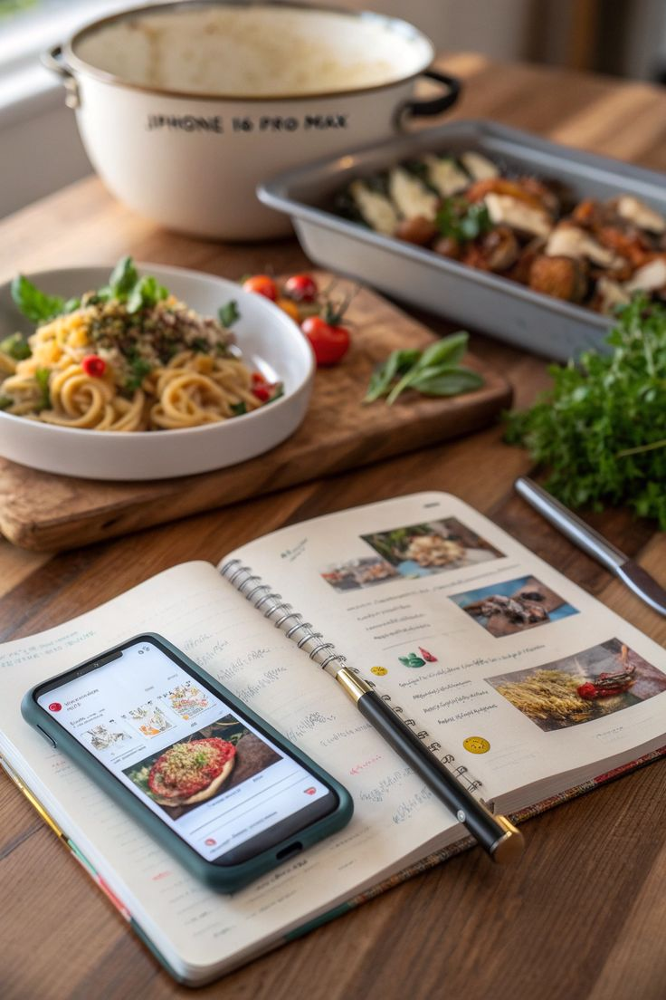
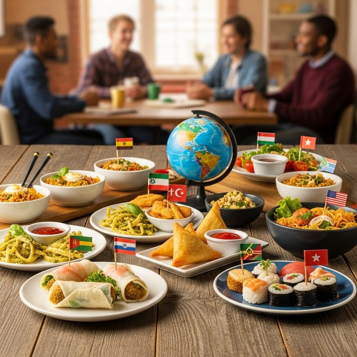
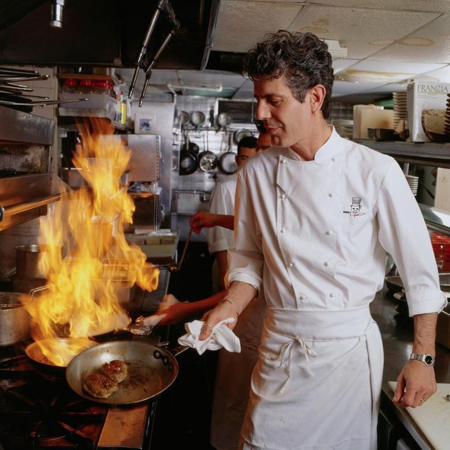

Receitas
Pratos do dia a dia e de ocasião, com lista de ingredientes e modo de preparo explicados sem pressa.
A Panela & Prosa é um blog de gastronomia para quem gosta de cozinhar, comer e contar histórias à mesa. Aqui você encontra receitas testadas passo a passo, roteiros de sabores de outras culturas e dicas práticas para ganhar confiança na cozinha.
Navegue pelos três conteúdos de destaque abaixo, escolha o que combina com a sua fome de hoje e, se quiser sugerir um tema, fale com a gente na página de contatos.
.jpg)
Clique em qualquer imagem para abrir a página completa do conteúdo.

Pratos do dia a dia e de ocasião, com lista de ingredientes e modo de preparo explicados sem pressa.

Uma viagem pelas cozinhas de outros países: ingredientes típicos, tradições e pratos para provar.

Técnicas, truques de tempero e cuidados com facas e panelas que melhoram qualquer receita.
Todo conteúdo aqui é pensado para a cozinha de casa: ingredientes fáceis de achar, tempos realistas e explicações do porquê de cada passo.